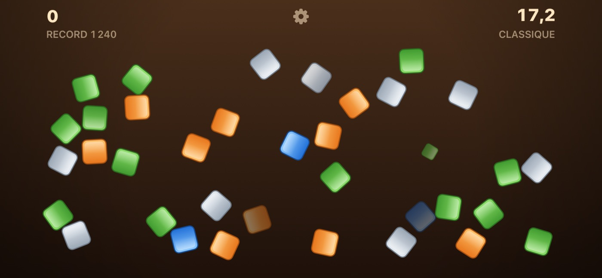
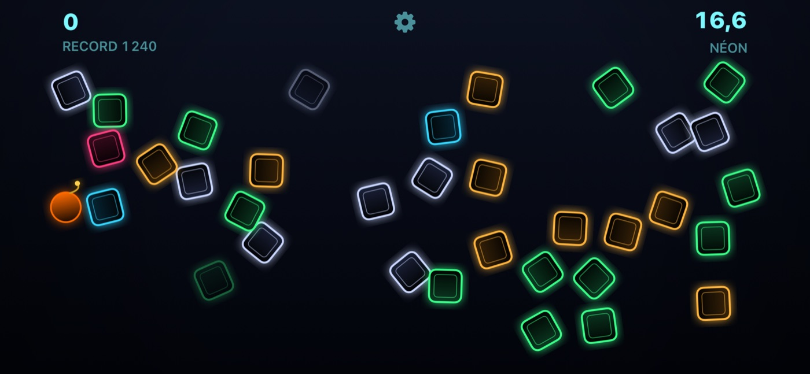
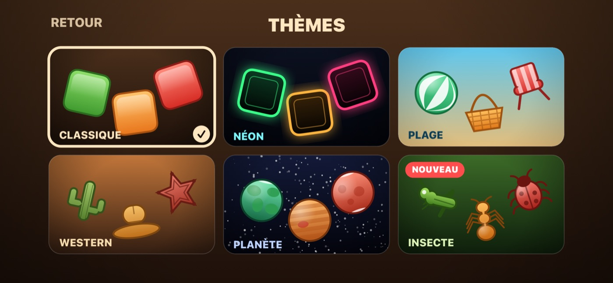
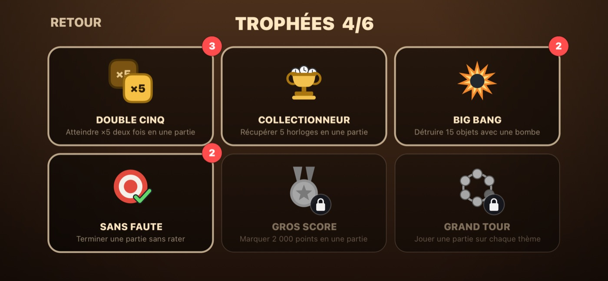
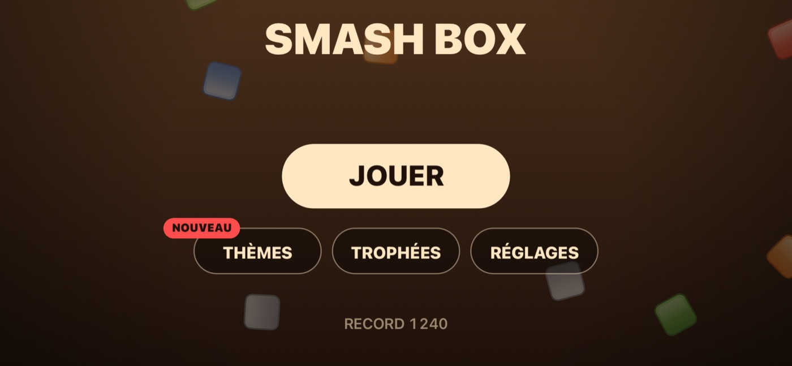

Smash Box
Trente-trois secondes. Une seule règle : ne ratez pas.
Les caisses arrivent de partout. Touchez-les pour les briser avant la fin du chrono — mais un geste dans le vide casse votre série et coûte plus cher que le point manqué.
Six thèmes, six trophées et un record qui vous suit entre iPhone et iPad. Aucune publicité, aucun achat intégré, aucun compte, et rien de collecté à votre sujet.

Comment jouer
- 1
Touchez les caisses
Les caisses arrivent de tous les côtés. Touchez-en une pour la briser et empocher ses points.
- 2
Enchaînez jusqu'à ×5
Les coups réussis d'affilée font monter le multiplicateur : ×2 à cinq, jusqu'à ×5 à cinquante. Une touche dans le vide vous renvoie à ×1.
- 3
Prenez les horloges, gardez les bombes
Une horloge ajoute huit secondes. Une bombe balaie tout ce qui l'entoure — idéale quand l'écran est plein.
Toutes les règles, les points et les trophées →
Ce qu'il contient
- Des parties de trente-trois secondes, avec un multiplicateur jusqu'à ×5
- Six thèmes : Classique, Néon, Plage, Western, Planète et Insecte
- Six trophées, dont cinq regagnables
- Record et trophées synchronisés via iCloud
- Vibrations désactivables
- Fonctionne entièrement hors ligne
Captures d'écran



